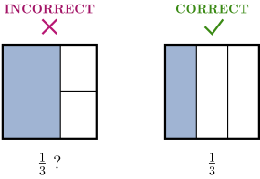
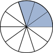
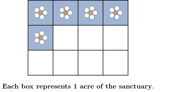
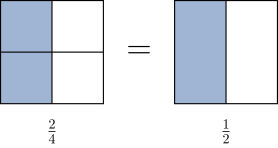
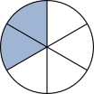
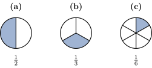

Introduction to Fractions
A fraction is an equal part of a whole. The square below has been divided into 4
equal parts. The fraction that represents the shaded part of the square is \(\textstyle \frac {1}{4},\) since 1 of
the 4 parts is shaded.
Show Alt Text
A square divided into four equal quadrants by a horizontal and a vertical line
through its center. The top-left quadrant is shaded blue, representing the fraction
one-fourth.
The denominator of a fraction tells you how many equal-sized pieces a whole has
been divided into. The numerator of a fraction is how many of those pieces you are
counting or considering.
Why do we need to divide a whole into equal parts?
Because fractions only make sense if the whole is divided into equal parts. For
example, the INCORRECT square on the left has been divided into 3 parts and 1 of
them is shaded. However, we can’t say that \(\textstyle \frac {1}{3}\) of the square is shaded because the
parts are not the same size. To correct this, we redraw the lines so that
every part is the exact same size, as shown in the CORRECT square on the
right.

Show Alt Text
Two squares side-by-side demonstrating the importance of equal parts in fractions.
The left square is labeled INCORRECT with a red X; it is divided into three unequal
parts with one large section shaded, showing that counting unequal pieces as
one-third is incorrect. The right square is labeled CORRECT with a green
checkmark; it is divided into three identical vertical rectangles with one shaded,
correctly representing the fraction one-third.
The circle below has been divided into 10 equal parts.

Show Alt Text
A circle representing a whole, divided into 10 equal
pie-shaped wedges. Three adjacent wedges in the top-right section are shaded blue.
What fraction of the circle is shaded?
\[ \textrm {Fraction Shaded } = \frac {\answer {3}}{\answer {10}} \]
A local wildlife sanctuary covers 12 acres of protected land. Recent data shows that
5 acres have been successfully restored with native wild flowers to support declining
bee populations.

Show Alt Text
A grid of 12 equal squares arranged in three rows of four. The four squares in the
top row and the first square in the middle row are shaded blue with white flowers in
the center.
The denominator in each part is the number of parts the sanctuary has been
divided into. The numerator in the first part is the number of squares with flowers.
The numerator in the second part is the number of squares without flowers.
What fraction of the sanctuary’s total area has been restored with wild
flowers?
\[ \answer {5/12} \]
What fraction of the sanctuary’s total area has not been restored with wild
flowers?
\[ \answer {7/12} \]
Equivalent Fractions
The square on the left has been divided into 4 equal parts, with 2 parts shaded. The
square on the right has been divided into 2 equal parts, with 1 part shaded. Since
both squares are the same size and have an equal amount of shading, we can
conclude that \(\textstyle \frac {2}{4}\) is equivalent to \(\textstyle \frac {1}{2}.\)

Show Alt Text
Two squares side-by-side, as described above, separated by an equal sign. The square
on the left represents two-fourths and the square on the right represents one-half.
Equivalent fractions represent the same part of a whole, but have different
numerators and denominators. Since a whole can be divided into any number of
equal parts, each fraction has infinitely many equivalent fractions.
Consider the circle below.

Show Alt Text
A circle divided into six equal wedge-shaped sections.
Two adjacent sections on the upper-left are shaded blue.
What fraction of the circle is shaded?
\[ \textrm {Fraction Shaded } = \frac {\answer {2}}{\answer {6}} \]
Which of the following circles represents an equivalent fraction?
(a) (b) (c)

Show Alt Text
Three circles labeled (a), (b), and (c) representing fractions. Circle (a) is divided
into 2 equal parts with 1 shaded (one-half). Circle (b) is divided into 3 equal parts
with 1 shaded (one-third). Circle (c) is divided into 6 equal parts with 1 shaded
(one-sixth).
Types of Fractions
-
Proper fractions are fractions in which the numerator is smaller than
the denominator. A proper fraction is always less than 1.
- Example: \(\frac {3}{4}\)
-
Improper fractions are fractions in which the numerator is greater than or
equal to the denominator. An improper fraction is always greater than or equal
to 1.
- Example: \(\frac {7}{12}\)
-
Mixed numbers consist of a whole number and a fraction. A mixed number is
always greater than 1.
- Example: \(1 \frac {1}{4}\)
Classify each of the following fractions as a
proper fraction, an
improper
fraction or a
mixed number.
-
\(\displaystyle 2\frac {1}{2}\)
Proper Fraction Improper Fraction Mixed Number
-
\(\displaystyle \frac {11}{12}\)
Proper Fraction Improper Fraction Mixed Number
-
\(\displaystyle \frac {15}{8}\)
Proper Fraction Improper Fraction Mixed Number
-
\(\displaystyle \frac {5}{5}\)
Proper Fraction Improper Fraction Mixed Number
When we write the mixed number
\(\textstyle 1 \frac {1}{4}\) what arithmetic symbol is not written, but
understood to be between the 1 and
\(\textstyle \frac {1}{4}?\)
\(\mathbf {\times }\) \(\mathbf {-}\) \(\mathbf {+}\) \(\mathbf {\div }\)
That’s right! \(1 \frac {1}{4} = 1 + \frac {1}{4}\)
Graphing Fractions on a Number Line
To graph a proper fraction, divide the distance from 0 to 1 into \(n\) equal parts, where
\(n\) is the denominator of the fraction. Then start at 0 and use the numerator to
determine the number of places to move to the right.
Graph the proper fraction \(\textstyle \frac {3}{4}.\)
Since the denominator is \(4,\) divide the distance from \(0\) to \(1\) into \(4\) equal parts. Then start
at \(0\) and move \(3\) parts to the right, since the numerator is \(3.\)
Show Alt Text
A horizontal number line showing the interval from 0 to 1, divided into four equal
segments. The integer 0 is labeled at the first tick mark, and the integer 1
is labeled at the fifth tick mark. A solid black dot is placed on the third
tick mark from 0, which is labeled below with the fraction three-fourths.
To graph improper fractions, we continue the process and divide the distances
between each whole number into \(n\) equal parts.
Graph the improper fraction \(\textstyle \frac {7}{4}.\)
Since the denominator is \(4,\) divide the distance between each whole number into \(4\) equal
parts. Then start at \(0\) and count \(7\) parts to the right, since the numerator is
\(7.\)
Show Alt Text
A horizontal number line extending from 0 to 2, divided into eight equal segments.
The integers 0, 1, and 2 are labeled. A single solid black dot is placed at the seventh
tick mark from 0. This point is labeled below the line with the fraction seven-fourths.
To graph a mixed number, first locate the whole number part on the number line.
Next, divide the distance between that whole number and the next whole number
into \(n\) equal parts, where \(n\) is the number in the denominator. Then start at the whole
number part and graph the fractional part.
Graph the mixed number \(\textstyle 2 \frac {1}{5}.\)
Since the denominator is \(5,\) divide the distance between the whole numbers \(2\) and \(3\) into \(5\)
equal parts. Then start at \(2\) and move \(1\) part to the right, since the numerator is
\(1.\)
Show Alt Text
A horizontal number line labeled with the whole numbers 0, 1, 2, and 3. The
segment between 2 and 3 is divided into five equal parts. A solid black dot is placed
on the first tick mark after 2, labeled as the mixed number two and one-fifth.
Identify the position of the letter
\(A\) on the number line.
Show Alt Text
A horizontal number line extending from 0 to 2. The distance between each whole
number is divided into eight equal parts. Point A is marked with a solid black dot
and is located at the third tick mark after 0.
\(A = \begin {prompt} \frac {\answer {3}}{\answer {8}} \end {prompt} \)
To find the denominator of \(A,\) identify the number of spaces between each whole
number. To find the numerator, start at 0 and count the number of tick marks to get
to \(A.\)
Identify the position of the letter
\(B\) on the number line.
Show Alt Text
A horizontal number line extending from 0 to 2. The whole numbers 0, 1 and 2 are
labeled. The distance between each whole number is divided into eight equal parts.
Point B is located at the fifteenth tick mark after 0 or equivalently at the seventh tick
mark after 1.
To find the denominator of \(B,\) identify the number of spaces between each whole
number. To find the numerator, start at 0 and count the number of tickmarks to get
to \(B.\) Equivalently, start at 1 and count the number of tickmarks to get to \(B,\) then write
the result as a mixed number.
Select all that apply.
\(1 \frac {7}{8}\) \(\frac {16}{8}\) \(\frac {15}{8}\) \(1 \frac {5}{8}\) \(\frac {5}{8}\) \(\frac {7}{8}\)
Identify the position of the letter
\(C\) on the number line.
Show Alt Text
A
horizontal number line extending from 0 to 4. The whole numbers 0, 1, 2, 3 and 4 are
labeled. The distance between each whole number has been divided into three equal
parts. Point C is labeled with a solid black dot and is located at the second tick mark
after 3.
Select all that apply.
\(\displaystyle 3\frac {1}{2}\) \(3 \frac {3}{4}\) \(\frac {2}{3}\) \(\frac {11}{2}\) \(3 \frac {2}{3}\) \(\frac {11}{3}\)
Negative Fractions
In the following problems, notice that the position of the negative sign changes but
the value of the fraction remains the same.
\begin{eqnarray*} \frac {-4}{2} &=& -2\\ & & \\ & & \\ \frac {4}{-2} &=& -2 \\ & & \\ & & \\ -\frac {4}{2} &=& -2 \end{eqnarray*}
Therefore, a negative sign in a fraction can be written in the numerator, the
denominator or in front of the fraction. However, when simplifying we typically place
the negative sign in front of the fraction.